频率可重构天线总结
（1）单元频率和辐射模式可重构天线
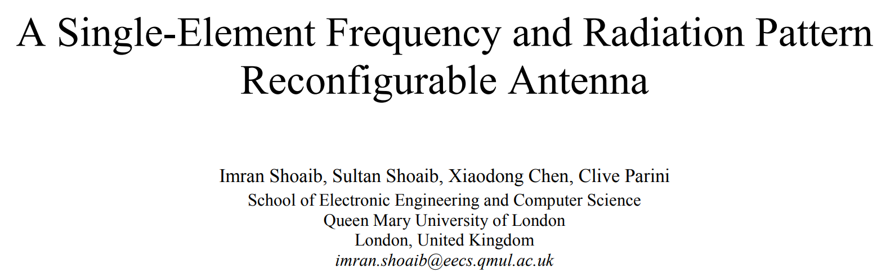
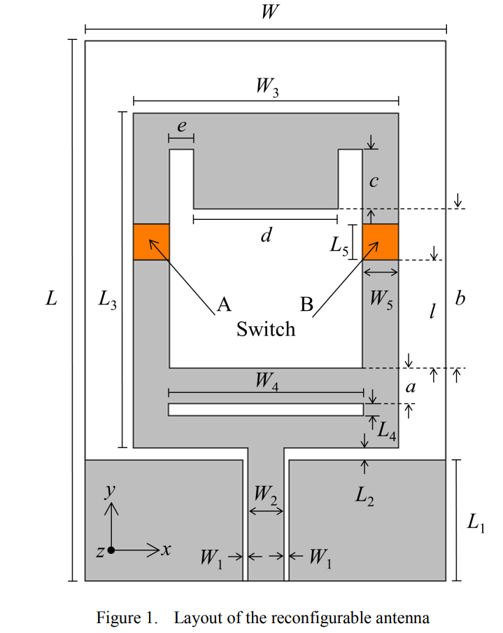
1、工作原理分析
该天线是一款基于共面波导（CPW）馈电的单极子开槽天线 。其核心原理是通过改变天线表面的电流分布来调节谐振频率和辐射方向图 。
重构机制：利用两个开关（实验中采用金属贴片模拟，实际应用可为PIN二极管或MEMS开关）来改变天线的有效辐射边界 。
OFF状态：天线呈现单频特性，工作在 5.8 GHz 频段，此时表现为标准的宽向辐射方向图（Broadside）。
ON状态：天线转变为双频工作模式（2.4 GHz 和 5.8 GHz），并且在高频段（5.8 GHz）的辐射方向发生了偏移（Redirected），实现了方向图分集 。
2、结构组成与谐振点影响分析
CPW单极子主体：长度约为 29 mm，接近 2.45 GHz 的四分之一波长（λ/4），这是产生 2.4 GHz 低频谐振的主要结构 。
U型槽与矩形槽：这两个开槽结构共同引入了 5.8 GHz 的高频谐振 。
矩形槽（Rectangular Slot）：其尺寸直接影响高频谐振点。实验发现，增大矩形槽尺寸会使高频谐振点向低频偏移，而对 2.4 GHz 的低频谐振几乎没有影响 。
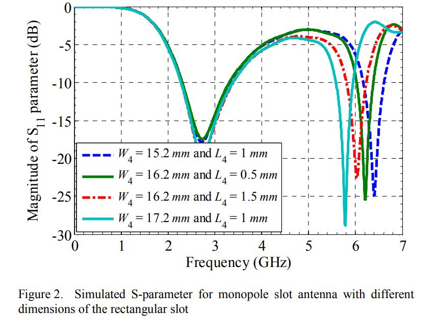
开关（A与B）：其位置是阻抗匹配的关键。通过开关的通断，天线在高频段的辐射电流路径发生改变，从而实现方向图重构，且无需额外的外部匹配网络 。
垂直间距 L2：主要用于优化天线的阻抗匹配，确保信号的高效传输 。
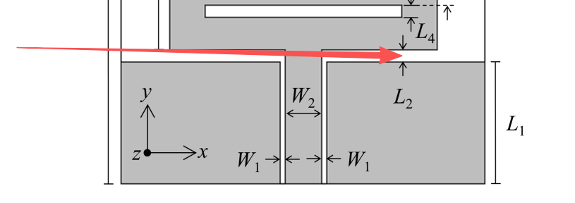
3、创新点
单单元多重构：在单个天线单元上同时实现了频率重构和辐射方向图重构，减少了天线阵列的体积 。
共用频段特性：在两种开关状态下，天线都能在 5.8 GHz 附近保持共同的阻抗带宽，这保证了通信在切换模式时的连续性 。
结构简洁：无需复杂的外部匹配电路，仅通过开关位置的优化即可实现良好的匹配和重构特性 。
4、不足之处
偏置电路缺失：论文中使用了金属贴片模拟开关（Proof of Concept），并未详细给出实际 PIN 二极管所需的直流偏置电路（DC Bias Network）设计 。在实际电路中，偏置线可能会对电磁场产生干扰。
增益稳定性：虽然实现了方向图重构，但未深入讨论在不同状态下增益的一致性以及切换过程中的瞬态响应。
带宽限制：高频段的带宽相对较窄，可能无法满足超宽带通信的需求。
5、改进建议与预测
集成有源开关：后续应引入真正的 PIN 二极管或光控开关，并设计精密的扼流圈（Choke）和偏置电路，以减少对辐射性能的负面影响
引入极化重构：目前的模型仅限于频率和方向图重构，未来可以尝试在槽线上增加扰动结构，实现线极化与圆极化的切换，提升抗多径衰落的能力。
超材料增强：预测可以结合超表面（Metasurface）结构。通过在天线背后放置反射板或在表面覆盖超材料罩，可以进一步提高天线的增益并更精确地控制辐射束的角度偏移。
多状态精细化控制：目前的开关仅有全开/全关状态，未来可引入数字控制系统，实现多波束扫描或多频段精细覆盖，以适应更复杂的 5G/6G 通信场景。
（2）PIN二极管紧凑型频率可重构天线
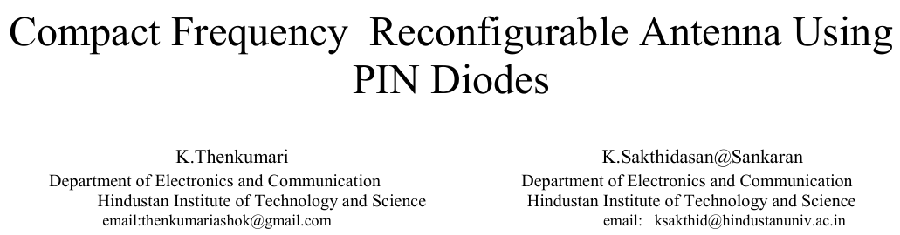
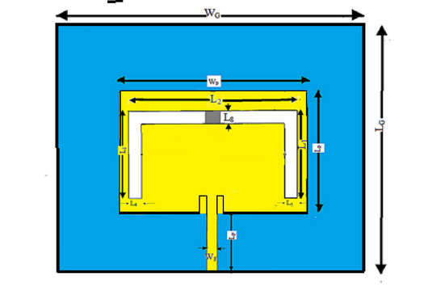
1、工作原理分析
天线的核心机制是通过 PIN 二极管改变电流的物理路径（有效电长度） 来实现频率重构 。
结构基础：采用 21×20×1.6 mm3 的 FR4 基板，在辐射贴片上蚀刻了一个倒“U”型槽（Inverted ‘U’ shape Slot） 。
重构逻辑：ON 状态（导通）：二极管等效于一个小电阻（3 Ω），此时开关闭合，增加了槽线的有效长度，天线工作在较低的频段（6.3 GHz 和 12.2 GHz） 。OFF 状态（截止）：二极管等效于电容（0.12 pF）与高阻（5 kΩ）并联，开关断开，槽线物理长度减小，天线跃迁至较高的频段（7.5 GHz 和 10.4 GHz） 。
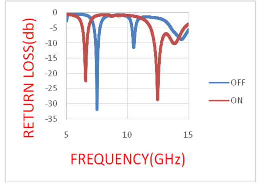
本质理解：电流不会在缝隙（空气槽）中流动，只会在金属贴片表面和缝隙边缘的金属上流动。
二极管导通（ON）时：电流从馈线流入贴片后，向四周扩散，到达倒置 U 型槽时，穿过中间的二极管，沿着U 型槽内侧边缘向左右两侧流动，再沿贴片外边缘回流。
二极管关断（OFF）时：电流从馈线流入贴片后，向四周扩散，到达倒置 U 型槽时，无法穿过二极管，只能沿着U 型槽外侧边缘向左右两侧绕行，再沿贴片外边缘回流。
2、结构组成与谐振点影响分析
辐射贴片与倒 U 型槽：这是谐振的核心。槽的存在迫使表面电流绕行，通过调节槽的尺寸（L1 到 L3）可精确控制谐振点 。
PIN 二极管（BAR50-02V）：固定在槽中心（占用 1 mm 空间），作为电长度的“调节阀” 。
馈电系统：采用 0.8 mm 宽的 50 Ω 微带线馈电 。
基板（FR4）：利用其高介电常数（4.4）实现小型化设计，且成本低廉 。
3、创新点
极度小型化：在仅约 400 mm2 的面积上实现了四频段（双状态双频）覆盖，尺寸优于文中对比的多数方案 。
单一开关多频重构：仅使用一个 PIN 二极管就实现了两个双频模式之间的切换（共 4 个谐振点），降低了控制电路的复杂度和插入损耗
高匹配度：在所有谐振点处 VSWR 均小于 2.0（大部分低于 1.5），且增益保持在 4.2–4.5 dB 的稳定水平 。
4、不足与改进建议
当前不足：
偏置电路简化：文中主要在 HFSS 中利用 RLC 模型仿真，实际应用中复杂的直流偏置线（DC Bias lines）会对辐射方向图产生畸变，论文未详细展示其实物集成方案 。
带宽受限：每个谐振点的带宽较窄（最低仅 100 MHz），在高数据率传输应用中可能受限 。
改进预测：
引入多槽耦合：建议在贴片上增加分形结构或多重寄生槽。预测这将使天线能够覆盖更宽的连续频段，或在单一状态下支持更多频段 。
极化/方向图复合重构：未来改进方向可结合第一篇文献的思路，通过非对称槽位设计，在重构频率的同时实现极化重构（如线极化转圆极化），这在抗干扰通信中极具价值 。
使用低损耗材料：将 FR4 替换为 Rogers 或特氟龙基板。预测增益将进一步提升至 6 dB 以上，并显著降低高频段（12 GHz 以上）的介质损耗 。
（3） 5G New C-band 应用的六边形频率可重构天线 。
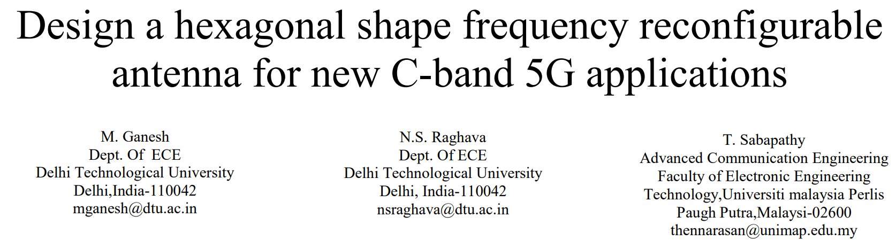
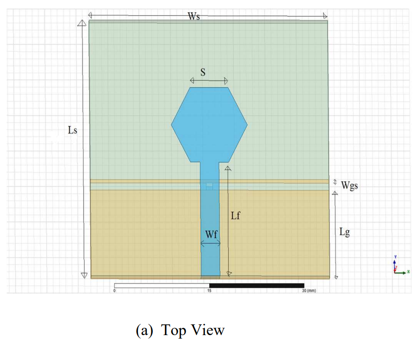
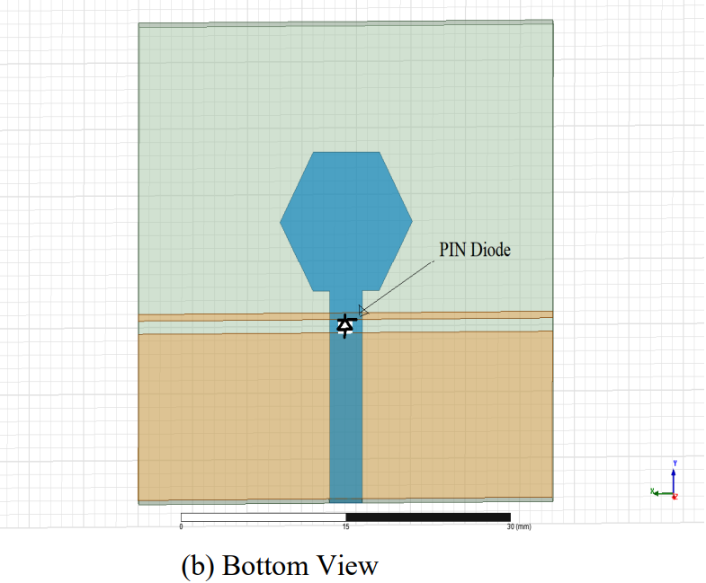
1、 工作原理分析
天线的设计核心在于利用缺陷地结构（DGS）与 PIN 二极管开关的结合来实现频率重构 。
辐射机制：采用微带线馈电的六边形贴片作为主辐射单元 。六边形结构可以看作是圆形贴片的演变，其谐振频率主要由贴片的有效尺寸决定 。
重构逻辑：不同于常见在贴片上开槽，该设计将 PIN 二极管（MADP-000907-14020）放置在缩减的地平面（Reduced Ground Plane）的间隙中 。
ON 状态：二极管导通，地平面的电连续性增强，天线等效电长度改变，谐振于 3.8 GHz（5G 新 C 频段） 。
OFF 状态：二极管截止，地平面存在间隙，改变了回流路径，使天线谐振于 3.6 GHz（Wi-Max 频段） 。
重点理解：
在大多数“贴片开槽”模型中，闭合开关确实会增加电流路径，从而降低频率 。但在这篇关于六边形地重构天线的文章中，原理恰恰相反，原因在于开关放置在地平面（Ground Plane）上。
为什么“闭合”反而变高频？
断开状态（OFF）：当 PIN 二极管断开时，地平面上存在一个 1 mm 的物理缝隙 。此时，地平面的电连续性被打断，回流电流无法直接通过缝隙，必须“绕道”或者在缝隙边缘形成更长的等效路径 。结果：有效电长度增加，谐振频率降低（工作在 3.6 GHz） 。
闭合状态（ON）：当 PIN 二极管导通时，它像一座“桥”一样把 Lg 和 Wgs 这两个金属块连接起来 。此时回流电流可以直接通过二极管，路径变得更加短捷。结果：有效电长度减小，谐振频率升高（工作在 3.8 GHz） 。
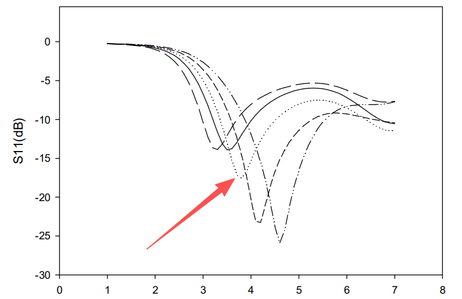
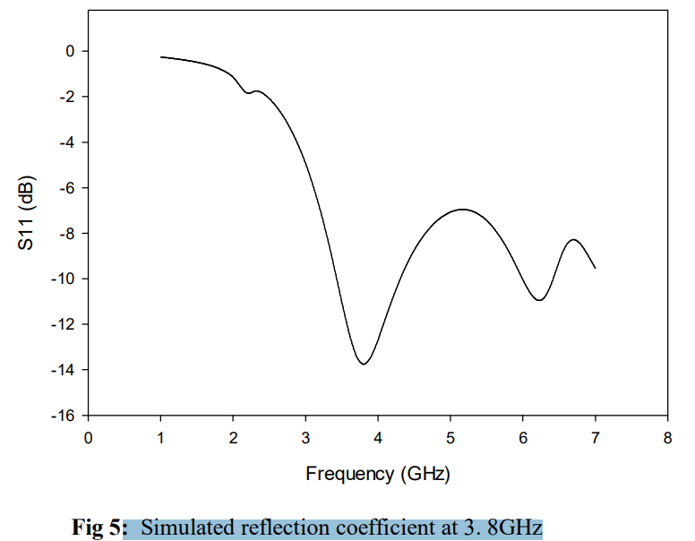
2、结构组成与谐振点影响分析
六边形贴片（Hexagonal Patch）：边长 S=6.065 mm 是决定基本谐振频率的关键 。它是基于 3.8 GHz 的目标频率，通过等效圆形半径公式计算并优化得出的 。
缩减地平面（Lg=12.5 mm）：地平面的长度对阻抗匹配和带宽有显著影响 。研究表明，改变 Lg 的数值会直接导致反射系数曲线的“凹陷”点位发生偏移 。
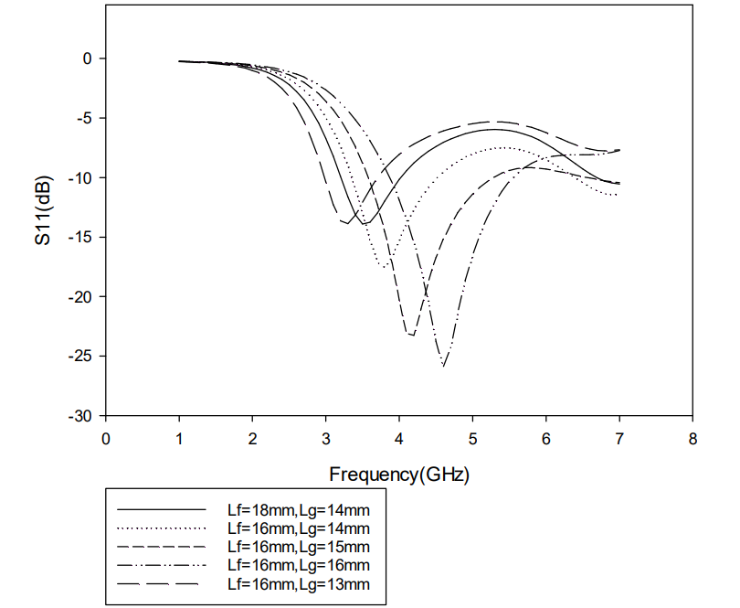
地缝隙与开关位置：缝隙位于 12.5 mm 处 。这个缝隙引入了额外的电抗特性，通过 PIN 二极管的通断，在地平面上实现“电长度”的动态调节，从而在 3.6 GHz 和 3.8 GHz 之间切换 。
馈线（Wf=3 mm, Lf=16 mm）：馈电线的尺寸确保了天线与 50 Ω 系统的高效耦合 。
3、创新点
地平面重构技术：相比于在辐射贴片上加开关，在地平面上进行开关切换通常对主辐射方向图的干扰较小，能维持较稳定的辐射特性 。
针对特定 5G 频段优化：专门为 FCC 2020 年新分配的 3.7–3.98 GHz 频段设计，具有很强的应用针对性 。
单开关实现双频切换：仅需一个 PIN 二极管即可实现两个关键频段的切换，设计简洁，成本低 。
4、不足之处
增益较低：天线的峰值增益仅在 2.24–2.34 dB 左右 。对于 5G 基站或终端应用来说，这一增益水平偏低，可能导致覆盖范围有限。
频率切换范围较窄：谐振点仅从 3.6 GHz 移动到 3.8 GHz，频率调谐比（Tuning Ratio）较小 。
隔离度考虑不足：论文未详细讨论在 ON/OFF 状态切换时，两个频段之间的电磁干扰隔离情况。
5、改进建议与预测
增益增强：建议引入空气层结构或超材料反射板。预测通过增加空气介质层降低有效损耗，增益可提升至 5 dB 以上。
多状态重构：在地平面增加更多非对称的缝隙和开关。预测可以实现不仅是频率，还包括带宽可重构（例如从窄带切换到宽带模式）。
集成偏置电路优化：目前的直流偏置对 RF 性能的影响需进一步量化。
小型化演进：使用更高介电常数的基板（如 Rogers 6010）。预测天线尺寸可以进一步缩小 30% 以上，以更好地集成到现代紧凑型 5G 设备中。
（4）频率可重构微带贴片天线阵列
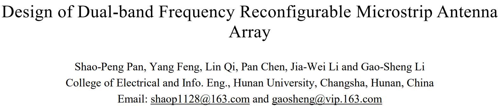
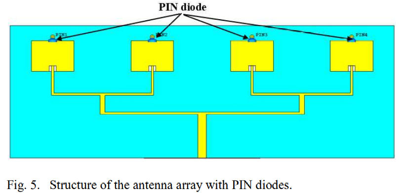
该模型是一款工作在 Ku 频段的 1x4 频率可重构微带贴片天线阵列，主要利用 PIN 二极管的开关特性实现双频段切换 。
1、工作原理分析
该天线阵列的重构核心机制在于：通过金属化过孔将辐射贴片局部接地，从而动态改变贴片的有效辐射面积 。每个贴片单元上集成有 4 个 PIN 二极管（阳极接贴片边缘，阴极通过过孔接地）。
OFF 状态（12.3 GHz）：当二极管截止时，贴片与地平面断开 。此时，表面电流分布在整个微带贴片表面 。天线依靠完整的贴片物理尺寸产生谐振，工作在 12.1-12.5 GHz 频段，阵列最大增益为 11.8 dB 。
ON 状态（13.5 GHz）：当二极管导通时，贴片靠近二极管的一侧区域被直接短路接地 。这导致该区域的表面电流变得稀疏，等效于“截断”了贴片的一部分，使天线的有效辐射面积减小 。有效面积减小导致谐振频率上升，天线跃迁至 13.1-13.8 GHz 频段，阵列最大增益为 11.6 dB 。
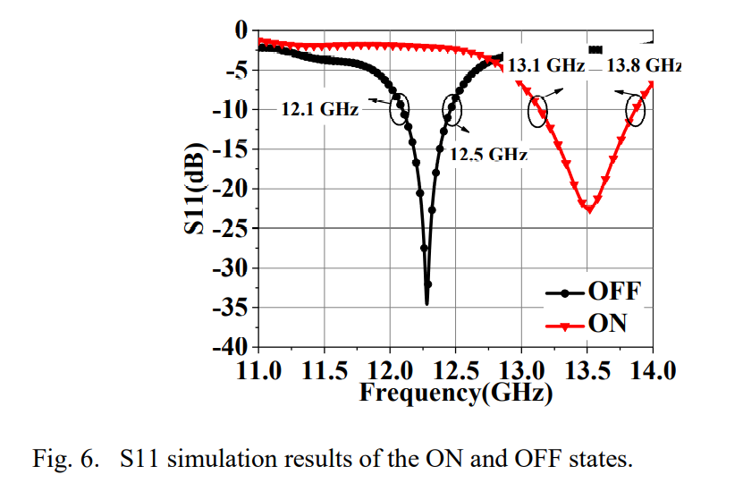
2、谐振点影响部分分析
辐射贴片主体尺寸：主要决定了低频状态（12.3 GHz）的基准谐振频率 。
PIN二极管与过孔的排列位置：它们充当了“可控短路墙”的作用 。其距离馈电点的物理长度直接决定了高频状态（13.5 GHz）的谐振频率上限 。
一分四功分馈电网络：虽然不直接改变谐振频率，但它保证了 4 个阵元在两个不同频段下都能获得等幅同相的激励，从而维持稳定、高增益且低旁瓣的定向辐射方向图 。
3、创新点
阵列级频率重构：现有的重构技术多集中于单一天线，将其扩展到阵列应用中会面临馈电网络带宽受限、阵元互耦变化等问题 。该设计成功在 1x4 阵列级别实现了重构，且在两个频段均保持了良好的阻抗匹配（S11 < -10 dB）和高定向性 。
简洁的电流截断机制：没有采用复杂的贴片开槽或多层结构，而是直接用二极管和接地过孔对贴片边缘进行短路截断，原理清晰且易于通过等效电路（L=30 pH, C=0.025 pF, R=7.8 Ω）进行理论验证 。
4、不足之处
直流偏置网络（DC Bias Network）缺失：论文在仿真中完全使用理想 RLC 集总参数替代二极管，并未设计实际的直流馈电走线 。在实际阵列中，为 16 个二极管提供偏置不仅布线困难，其引入的寄生电容和射频泄漏会严重影响方向图和增益。
高元件数量带来高损耗：每个贴片使用 4 个二极管，整个阵列多达 16 个二极管 。微波频段下，PIN 二极管的插入损耗不可忽视，实测增益大概率会显著低于仿真的 11.6-11.8 dB 。
频带偏窄：作为 Ku 频段的天线，两个状态的绝对带宽分别仅为 400 MHz 和 700 MHz，相对带宽不足 6%，难以满足宽带高速通信需求
5、改进建议与预测
设计射频扼流圈（RF Choke）偏置网络：必须将高阻抗偏置线与扇形/径向短截线集成到 PCB 版图中。
精简二极管布局：尝试将贴片顶部的 4 个二极管替换为 1-2 个，并在其后方连接一条连续的金属短路带（Shorting Strip）。
宽带化馈电网络改造：将现有的阶梯阻抗变换器修改为多节阻抗变换（Multi-section Transformer）或引入缺陷地结构（DGS）。
（5）频率可重构 U 型槽微带贴片天线
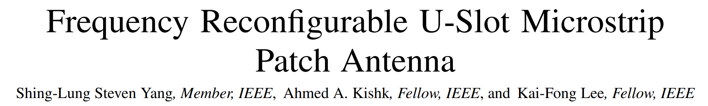
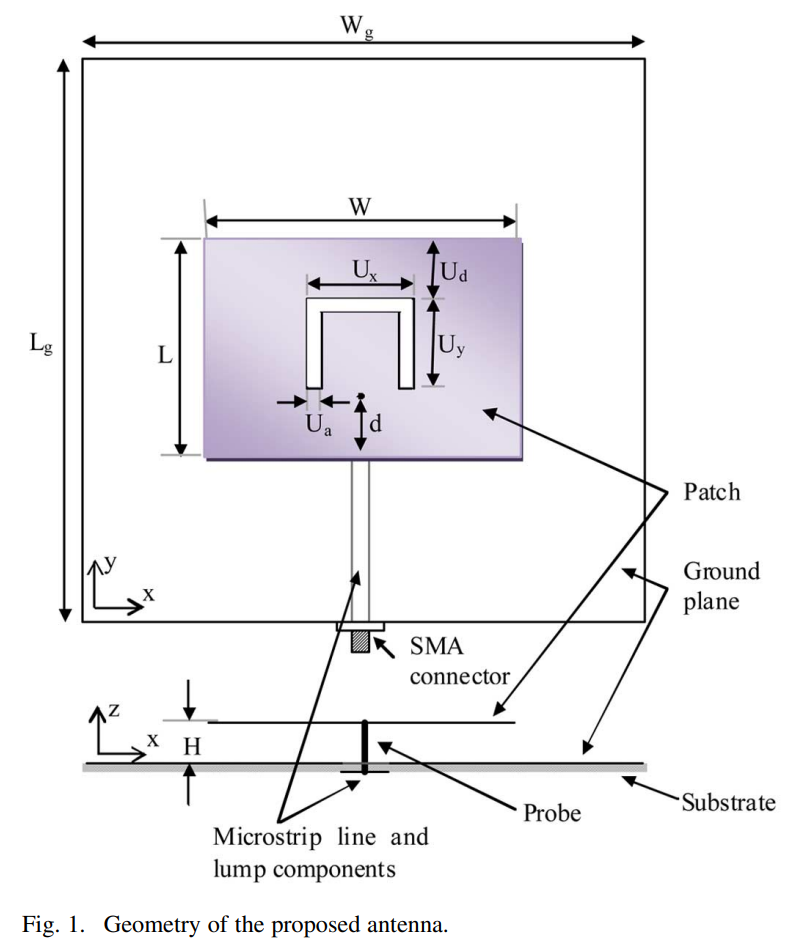
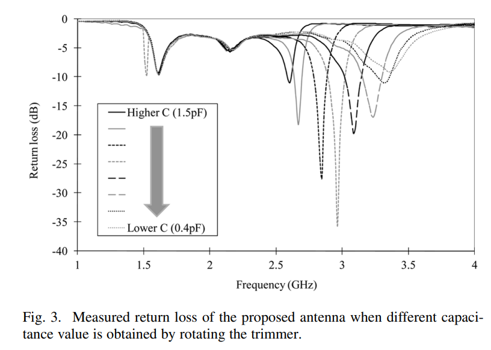
在微带天线设计中，引入重构元件往往会破坏天线表面的电流分布，从而导致辐射方向图畸变。这篇论文提供了一个非常巧妙的解题思路：不改变辐射贴片的物理结构，而是通过调节输入阻抗匹配网络来实现频率重构。
1、工作原理分析
该模型的核心机制并不像常见的重构天线那样通过开关改变辐射体的物理面积，而是通过操纵输入阻抗匹配来实现频率的动态调谐 。
U型槽的核心作用：当使用厚基板（如本设计中12 mm的空气/泡沫层）时，较长的馈电探针会引入很大的输入电感 。U型槽的引入不仅产生了一个电容分量来抵消该电感 ，更关键的是，它在第二和第三谐振点之间创造了一个输入电阻非常平坦、输入电抗呈高度线性变化的宽带区域 。
本质理解：长探针产生的是【寄生电感（Inductance, L）】：当基板很厚（比如 12 mm）时，连接贴片和背面微带线的长探针就像一截导线，高频电流流过时会产生显著的感抗（表现为正的虚部 +jX）。U型槽产生的是【寄生电容（Capacitance, C）】：贴片上的U型开槽强行切断了表面电流的直接路径，使得槽的两侧积累电荷，从而产生容抗（表现为负的虚部 −jX）。感抗和容抗在相位上确实是刚好相反的。电感让电流滞后电压 90°，电容让电流超前电压 90°。当它们串联在同一个天线结构中时，正负电抗会相互抵消。正是由于这种内部的 LC 谐振补偿，再加上U型槽本身激发的双谐振特性，才造就了您所说的那段“输入电阻 (R) 接近 50 Ω 且非常平坦，输入电抗 (X) 呈线性变化”的宽带区域 。
频率调谐机制：由于该区域的输入电阻已经很平坦且接近匹配值，设计者只需要改变总的输入电抗即可实现阻抗匹配（Zin≈50 Ω） 。他们在微带馈线上并联了一个1 nH的电感和一个可变贴片电容（微调电容，范围0.4-1.5 pF） 。通过旋转微调电容，改变了净电抗为零的频率点，从而将天线的匹配频率从 2.6 GHz 平滑地调谐到 3.35 GHz 。
本质理解：天线本身在 2.6 - 3.35 GHz 这段频率里，电阻 R 已经很乖了（接近 50 Ω），唯一不乖的是电抗 X（不等于 0）。只要把 X 变成 0，天线就能谐振发射。
工作过程：
LC并联网络的作用：电感 L 和电容 C 并联在一起，它们相当于一个“电抗调节器”。
转动电容：图上的 C(pF) 是一个可调电容（微调电容）。当你用螺丝刀转动它，改变它的电容值时，这个并联网络对外呈现的总电抗就会发生变化。
抵消归零：假设天线在 3 GHz 时，自身带了 +15 Ω 的电抗。你只需要调节电容 C，让外部的 LC 网络刚好产生 −15 Ω 的电抗。两者相加 +15+(−15)=0。此时，天线在 3 GHz 完美匹配！
频率游走：如果你把电容调到另一个值，LC 网络可能产生 −25 Ω 的电抗，这刚好能抵消天线在 2.8 GHz 时的电抗，于是天线的工作频率就平滑地跳到了 2.8 GHz。
2、结构参数与谐振点影响分析
作者在设计中刻意将第一谐振点与高次谐振点的调谐分离开来，以最大化调谐范围 。
U型槽尺寸（Ux 和 Uy）：这两个参数决定了绕过槽的电流路径 。它们主要影响第一谐振点的谐振频率，而对第二和第三谐振点的幅度（电阻值）影响较小 。
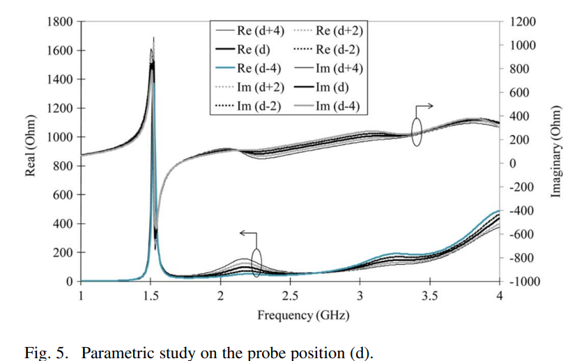
探针位置（d）与U型槽水平段位置（Ud）：这两个是关键的阻抗匹配调节参数 。移动馈电点或水平槽的位置会改变馈线与谐振腔模式之间的耦合，直接调节第二和第三谐振点的幅度（输入电阻水平） 。例如，当探针偏离最佳位置时，第二谐振点的输入电阻会上升，而第三谐振点会下降 。
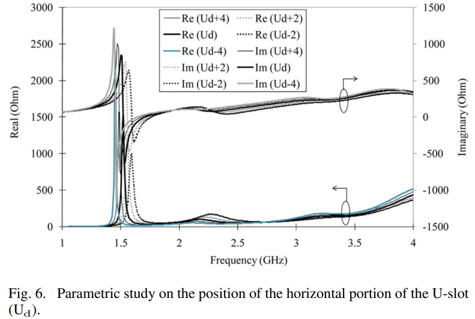
3、创新点
控制电路与辐射体的空间隔离：以往的设计常将变容二极管或开关直接横跨在辐射贴片的开槽上，这不仅增加了制造难度，其偏置引线还会严重干扰辐射方向图 。该设计的创新之处在于，将所有的调谐元器件和电路全部放置在接地面下方的微带馈线上 。辐射贴片本身保持完全无源和结构简单 。
利用宽带特性进行“频率选择”：设计者没有强行改变一个窄带天线的基模，而是聪明地设计了一个具有宽带阻抗特性的U型槽天线，然后利用可调匹配网络在这个宽带范围内“挑选”所需的工作频率 。
4、不足之处
机械式手动调谐：原型机依赖于手动旋转的微调电容器（MuRata TZW4） 。这种机械调谐方式响应速度极慢，完全无法适应需要微秒级切换的现代动态无线通信系统。
剖面过高：为了获得U型槽宽带阻抗特性，该天线使用了高达 12 mm 的泡沫基板 。这种厚度对于追求极致轻薄的现代移动终端来说过于笨重。
调谐比受限：最高调谐频率与最低调谐频率之比仅为 1.28 左右 。虽然性能尚可，但可能无法覆盖跨度极大的多个通信频段。
5、改进建议与预测
如果我们想将这种重构理念应用到您之前关注的K-A波段（高频段）SIW天线或微带天线中，可以进行以下改进：
引入电子调谐控制：最直接的改进是用变容二极管（Varactor Diode）替换机械微调电容
高频下的分布参数化（Distributed Elements）：在 3 GHz 时，使用集中参数元件（1 nH的贴片电感、贴片电容）是可行的 。但如果扩展到 K-A 波段，这些表面贴装元件的寄生效应将带来巨大的损耗。
个人理解：
在1.5GHz的时候发生谐振，但是输入电阻非常大，阻抗匹配非常不好，但是通过改变槽和馈点位置，对1.5GHz的阻抗变化影响几乎没有，但是较高频率的点会有变化。作者通过调整坐标位置，让2.3GHz到3.35GHz的输入阻抗更接近于50欧姆（这个时候对应的S参数肯定会有一个大坑）。在探针上增加固定电感可可变电容，通过调整输入阻抗来改变天线的工作频率。但是通过调整电容，肯定只有一个位置，可以使S参数的大坑最深。
在没有加上固定电感和可变电容之前，这个 2.3 GHz 到 3.35 GHz 的区间里，并没有大坑！
产生大坑（回波损耗 S11<−10 dB，意味着能量完美辐射）的条件极其苛刻，必须同时满足两个条件：电阻 R≈50 Ω 电抗 X≈0 Ω
通过调整电容，肯定只有一个位置，可以使 S 参数的大坑最深。但在频率可重构天线中，实际发生的物理现象比这个更奇妙：电容的作用，不是在同一个频率上挖坑，而是“把坑搬家”！旋转可变电容，本质上是在这条轨道上“移动大坑的位置。
当电容调到 C1 时，它刚好把 2.6 GHz 处的电抗抵消为 0。于是，在 2.6 GHz 处出现了一个深深的大坑（天线工作在 2.6 GHz）。
当电容调到 C2 时，它刚好把 3.0 GHz 处的电抗抵消为 0。于是，大坑从 2.6 GHz 消失了，瞬间转移到了 3.0 GHz（天线工作频率切换到了 3.0 GHz）。
既然坑可以到处移动，那么在哪一个频率坑最深呢？
在整个 2.6 GHz - 3.35 GHz 的移动范围内，肯定有一个频率点的电阻 R 是最最接近绝对 50.0 欧姆的。在这个频率点对应的电容值下，坑会达到最深（比如深达 -35 dB）。
但是，在其他频率点，电阻 R 可能稍微偏离了一点（比如变成了 60 欧姆 或 45 欧姆）。此时虽然坑没有那么深（可能只有 -15 dB 或 -20 dB），但在工程应用中，只要 S11 的坑深于 -10 dB（即反射功率不到 10%），我们就认为天线是完美匹配的。
1.5 GHz：天线的自带基模，电阻极大，调谐它会牵一发而动全身，直接放弃。
调整槽和探针：创造了一段电阻完美在 50 Ω 附近徘徊的“宽带轨道”，但此时带有有害电抗，无法直接发射。
增加 LC 网络：作为“电抗消除器”，通过改变电容值，在宽带轨道上的不同位置精准消除电抗。电容调到哪，大坑（谐振点）就指到哪，这就是频率重构的本质！